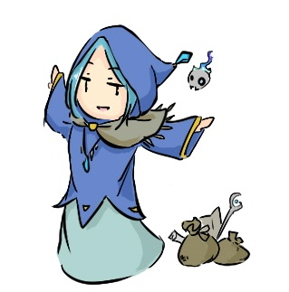
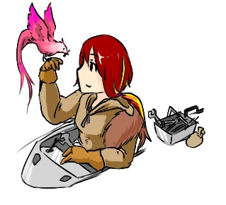
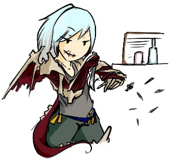
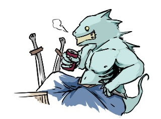
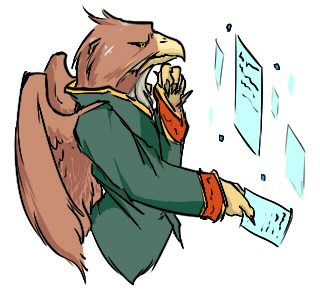
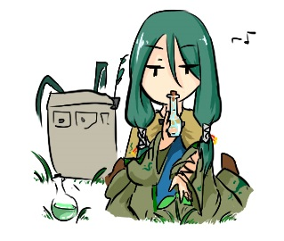
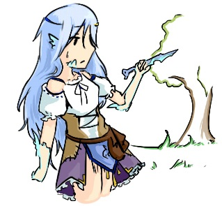
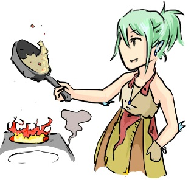

| 名前 | フーリア・エスカドル |
|---|---|
| 性別 | 女 |
| 職業 | 死霊術師 |
| 星座 | 毒蛇座 |
| 血脈 | 元素の血脈 |
| 性格 | 傍若無人、気まま |
◆フーリア・エスカドル
容姿端麗だが得体の知れない死霊術師。一緒に旅をしている少女を妹のように大切にしている。不老である代償に人間の魂が必要なため度々人を攫っては喰らい、お咎めを受けている。
「幾つもの命よりも、ただあの子が生きていることの方が尊いのさ。」

| 名前 | スクルファ・ドラ=モーレ |
|---|---|
| 性別 | 女 |
| 職業 | 機械技師 |
| 星座 | 天空座 |
| 血脈 | 原初の血脈 |
| 性格 | 気さくで飾らない |
◆スクルファ・ドラ=モーレ
イスカルカーテの動力である機械類を作り、調整する機械技師の一人。 赤いもの、辛いものが大好き。寒い場所に住んではいるが寒いのは大嫌いなようだ。 肩に止まってる鳥は相棒で、作業中はよく道具を持って来てくれる等とても賢いらしい。 ちなみに機械技師である上に、オートマタ技術にも精通しており人型のオートマタとかをよくいじっている。「いつか感情のある機械人形を作ってみたいんだ。大きくて、優しいヤツ！」

| 名前 | ダルマ |
|---|---|
| 性別 | 女 |
| 職業 | 反乱軍第三小隊長 |
| 星座 | 大君座 |
| 血脈 | 盗人の血脈 |
| 性格 | 毒舌、カリスマ |
◆ダルマ
超毒舌で、部下の信頼は厚いが指揮官には食らいついてばかりいるからいつまで経っても出世しない。ちなみに元人間だが拷問を受け、四肢は切り取られた。残っている生身の身体は頭と胴体だけである。
他は全て機械義手(足)であるが、非常に上手く使いこなせているようだ。
ちなみに部下思いで実は優しい。毒舌なのは照れ隠しにもなるが基本的に素なのでおちょくると殺される。
「死ね。今すぐどぶの中で溺れ死ね。それか魔術師にでも食われてしまえ。」

| 名前 | イザナギ |
|---|---|
| 性別 | 男 |
| 職業 | 反乱軍第三小隊副隊長 |
| 星座 | 獣座 |
| 血脈 | 第六感の血脈 |
| 性格 | 男前 |
◆イザナギ
元人間、実験場で合成獣にされた。副隊長。 巨漢だがその隠密能力には目を見張るものがある。 合成獣であり、エラ呼吸をするために口を塞がれた。取れるけど本人は実は気に入っている。 ご飯も食べれるし喋れる。けど付けてる。 目は実験時に他の者に移植されたので機械眼をつけている(ちゃんと見える) ダルマとは実験上からの深い付き合いであり、心から信頼を寄せている。 どうでもいいが魚が好き。「隊長が望むなら。といっても俺だけじゃ嫌だけどな。ほら、お前も来るんだろう？」

| 名前 | イスカ |
|---|---|
| 性別 | 男 |
| 職業 | 隊員(戦略担当) |
| 星座 | 剣座 |
| 血脈 | 思念の血脈 |
| 性格 | 真面目 |
◆イスカ
超頭脳明晰。気難しそうな顔した鳥翼族の戦略家。 実際ダルマにはお前が司令官になればいいのにとかあのジジイはクソの役にも立たないとか言ってる。 一見悪役に見えるが実はとても忠誠心に厚い。隊長含む隊の皆が大好き。でも言わない。 しかし結構そのお顔で損をしてきたから自分の容姿があまり好きではない。 空からの奇襲がとても強く、白兵戦にもそこそこ長ける。 ちなみにただの鳥翼族のように見えるが実は合成獣であり、どこが「合成」されたかというと脳である。 スパコン並みの演算能力を持つ。「ううむ…少々お待ちください。…勝率99.9%ですね。私が行かなくても良いのでは？」

| 名前 | イムルフ・シルフェ |
|---|---|
| 性別 | 両性 |
| 職業 | 薬草師 |
| 星座 | 塔座 |
| 血脈 | 背徳の血脈 |
| 性格 | 飄々、倒錯的 |
◆イムルフ・シルフェ
性別不明の薬草師。実は触手を持っている。 緑色の長い髪とすぅっと流れるような目が特徴。 危険も顧みずただ夢中になれる薬を探している。 どんな毒薬にも耐性を持つ。故に気持ちよくなれる薬が無い。 とにかく色んな植物やら薬やら曰くつきの素材類を持ち歩き旅をしている。 要らなくなった薬や素材は売ってくれるのだそう。 性癖、性格はとにかく倒錯的、薬にしか興味がなく快楽は全て薬で得るものと考えている。「ちょっと夢中になれる何かを頂戴よ」

| 名前 | ネノーク・ロネルダ |
|---|---|
| 性別 | 女 |
| 職業 | 剣士(双剣使い) |
| 星座 | 女神座 |
| 血脈 | 盗人の血脈 |
| 性格 | 穏やか、怖がり、優しい |
◆ネノーク・ロネルダ
腕っ節は強いけど性格は穏やか、大変お淑やかな女の子。 亜人の母の血を強く引いているため、少しだけ鱗が目立つ。 故に店にはいつもおらず、近くの食べられる草や魚や獣などを狩りしている。 昔に亜人の子だと客に殴られてから、お客さんが苦手。 身体に傷は付かないけれど心はがっつり傷ついちゃう系。 結構擬音とか反応とかが変。あと案外お馬鹿。 でも微笑みで誤魔化す。誤魔化しスキルまじ高い。「わびゃっ…え、あ…え、っと…お宿を探しているんですか？」

| 名前 | ハティ・ロネルダ |
|---|---|
| 性別 | 女 |
| 職業 | 料理人 |
| 星座 | 秘宝座 |
| 血脈 | 盗人の血脈 |
| 性格 | 快活、元気 |
◆ハティ・ロネルダ
姉とは違い、とても活発で明快な性格。 凹みやすいけど回復がとっても早い、みたいな。 しかし家事やら料理の腕は確かで、基本的に宿の事はこの子がやっている。 なんだかんだで姉のことを慕っており、怖い時はいつも姉の後ろに隠れる。 だいたいお客様が来た時フライパンを持っているのはフライパンを叩いて姉を呼ぶためだったり。 立ち振る舞い強そうだが本当はとても弱い。気丈そうに振る舞うのは隙を見せないため。「なになに、うちの料理を食べにきたの？あんたなかなかの通だねぇ！」